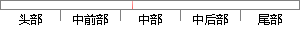

其中n表示了当前数据在窗中处于第n个数据，N表示汉明窗的窗长度。
片段位置图

相似结果|
相似片段 1：／=口X—j-C矿urrentld+(1一口)×鲁 (4-1)珊 、 7 K 、’其中：Currentld表示当前正在播放的数据块编号，／>Currentld；WB表示滑动窗口的大小；K表示邻节点总个数；三，表示拥有数据块．，的邻节点个数。
相似片段 2：。其中 a 表示指标总个数，b 表示指标值长度为 4字节的指标个数。( )4 4 8xdrN a b a b= × + × + × ? (式 3-1)优化数据格式对于静态数据和没有运行虚拟机系统的动态
相似片段 3：菜单序号表示菜单在窗口中所有菜单中的次序；菜单长度表示该菜单项中汉字的个数，菜单数据区存放菜单汉字的GM码；参数标志为0表示没有参数，为1代表此菜单项是对话框，其后是参数。窗口数据结构如图3．5所示
|
※ 片段修改建议 ※
近似词参考：- 其中：此中 个中
- 表示：暗示 默示 示意 透露表现 表现
- 表示：暗示 默示 示意 透露表现 表现
系统自动生成语句：此中n暗示了当前数据在窗中处于第n个数据，N暗示汉明窗的窗长度。
注：本片段修改建议为系统自动生成，仅供参考。